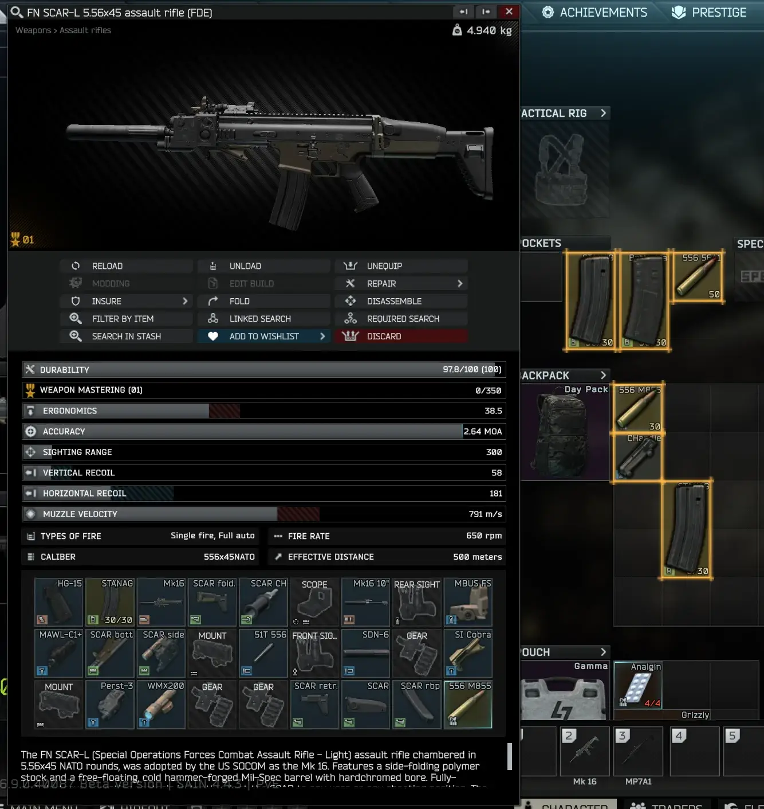
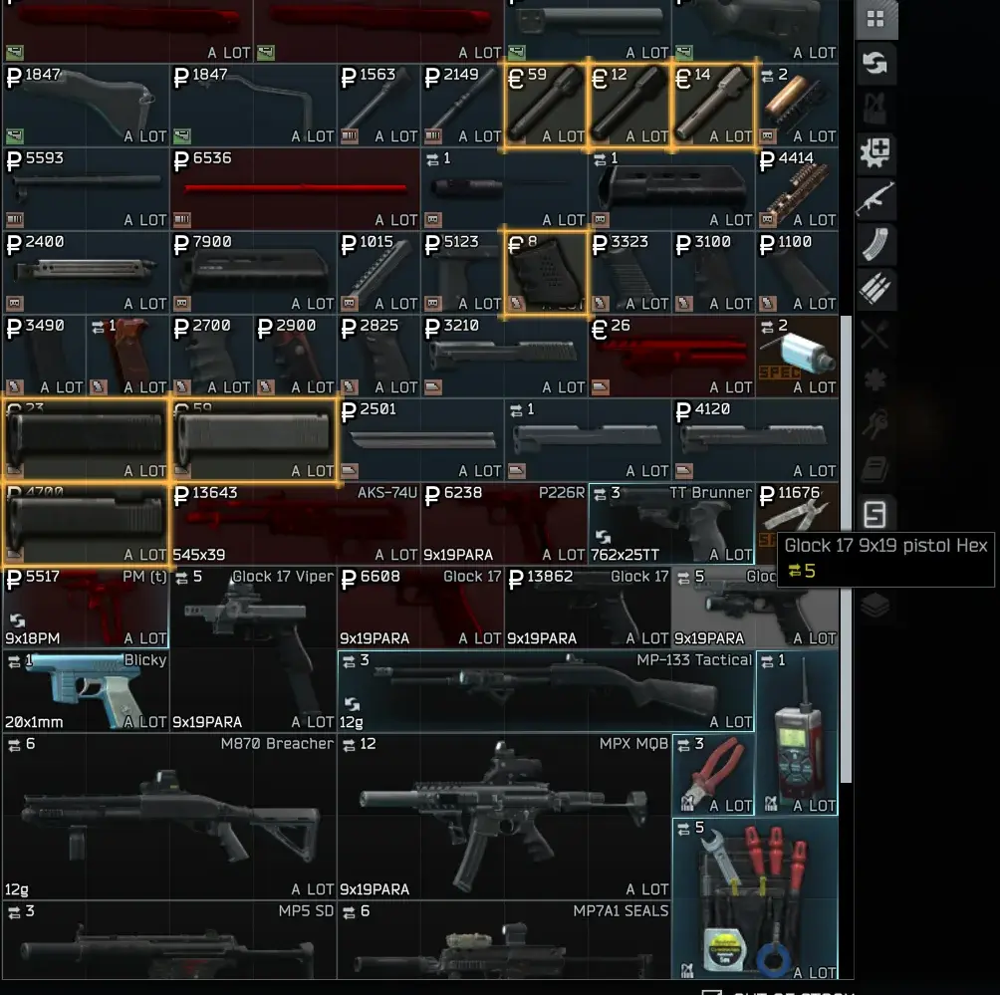

AC's Attachment Compatibility Highlight
- Downloads
- 2,619
- Favourites
- 31
- Mod lists
- 35
Attachment Compatibility Highlight
stop guessing what fits
Hover a part and THE CITY shows you where it belongs. Compatible slots glow green, valid replacements turn orange, and blocking conflicts are marked red.
- Green means compatible — highlights empty attachment slots and loose items that fit.
- Orange means replaceable — shows installed parts the hovered attachment can legally replace.
- Red means blocked — marks installed parts that conflict with the hovered attachment.
- Works across the UI — inventory, stash, traders, weapon modding, and inspect windows.
- Keeps inspect context — the last focused item window continues driving highlights even when you are not hovering its icon.
- Understands trader screens — compares trader offers with visible offers and your stash while the deal screen is open.
- Custom colors — all three highlight colors are configurable through F12.
- Lightweight — event-driven updates with no per-frame scanning.
Compatibility follows EFT’s own slot filters and conflicting-item data. It is independent of trader stock, loyalty, price, and raid state.
- Download the release archive.
- Extract it into your SPT root folder — the one containing
EscapeFromTarkov.exe. - Launch SPT and hover an attachment.
Expected install path:
BepInEx/plugins/AnanasCharles-AttachmentCompatHighlight/AttachmentCompatHighlight.dll
Client mod only — no server mod required.
Requirements:
- SPT 4.0.13
- No additional dependencies
Use F12 Configuration Manager or edit:
BepInEx/config/com.ananascharles.attachmentcompathighlight.cfg
Available settings:
EnabledHighlight ColorReplace Highlight ColorConflict Highlight Color


- Not a general backpack, rig, or stash-placement helper.
- Conflict highlighting uses EFT’s slot filters and
ConflictingItems, not a live inventory move simulation. - UI mods that draw their own overlays directly on item icons may visually stack with these borders.
Source: GitLab
License: MIT
Version
1.1.0
Attachment Compatibility Highlight 1.1
A complete visual overhaul for compatibility highlighting. Hover an attachment anywhere in THE CITY’s inventory UI to reveal compatible slots, valid replacements, and blocking conflicts before moving the item. What’s new
Reworked compatible and replacement highlights into a warm-gold neon treatment.
- Added a bright slot outline, soft exterior bloom, subtle interior tint, and an outline around the item’s visible silhouette.
- Switched slot borders to fixed-pixel rendering. Single-cell and multi-cell items now use the same stroke thickness and glow falloff without stretching.
- Active inspect and weapon-detail windows now occlude highlights belonging to the inventory underneath them.
- Stat Delta Preview remains visually above compatibility highlights when both overlays intersect.
- Legacy green/orange default settings migrate automatically to the new gold color. Custom conflict colors remain unchanged.
Existing behavior retained
- Compatible empty slots and loose items are highlighted throughout inventory, stash, trader, weapon-modding, and inspect views.
- Installed parts that the active attachment can legally replace are identified.
- Blocking conflicts remain marked with a translucent red overlay.
- The most recently focused inspect item can continue driving highlights without an active hover.
- Compatibility follows EFT’s slot filters and ConflictingItems data.
- Compatibility scans remain event-driven; the renderer performs work only while highlights are visible.
Version
1.0.0
See what fits before you drag, buy, or rebuild.
Hover an attachment anywhere in THE CITY’s inventory UI to reveal compatible slots, valid replacements, and parts that block installation.
Highlights
- Green borders for compatible empty slots and loose items.
- Orange borders for installed parts the hovered attachment can replace.
- Red overlays for installed parts that conflict with the hovered attachment.
- Works in inventory and stash grids, trader deal screens, weapon modding, and item inspect windows.
- Keeps the most recently focused inspect item active even without a current hover.
- Checks compatibility in either direction for loose items.
- Uses EFT slot filters and
ConflictingItemsdata. - Configurable compatible, replacement, and conflict colors.
- Event-driven implementation with no per-frame scanning.
- Separate overlay objects avoid mutating THE CITY’s native item borders.